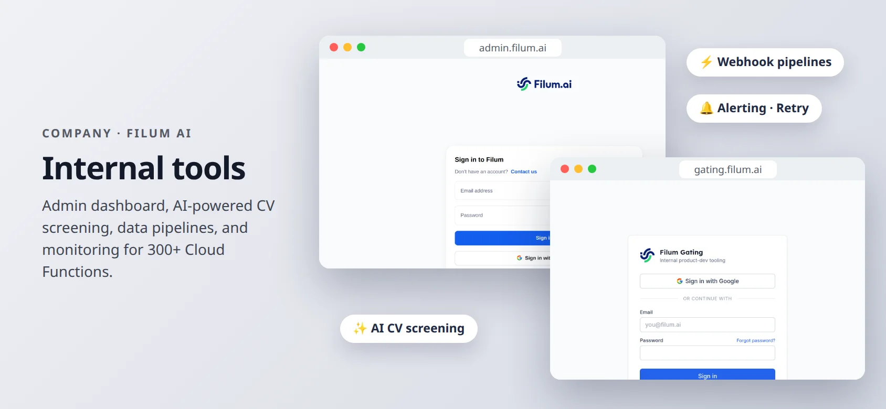

COMPANY PROJECT · FILUM AI · 2024 — 2026
Filum internal tools
Tools that help Filum’s own teams work faster: an admin dashboard, an AI-powered CV screener, and automated data pipelines.
- Next.js
- Node.js
- Python
- Webhooks
- OpenAI/LLM
- GCP
- Docker
Built at Filum AI as part of the engineering team. These tools belong to the company; they are for staff only.

About
Not every project faces customers. Marketing, HR, and Operations at Filum each had manual work that ate hours every week.
I built internal tools to take that work off their hands, and kept the cloud services behind them running, including on-call support for production incidents.
What it does
Admin dashboard
Internal dashboard for system administration, operational monitoring, and customer support.
AI CV screening
Validates and manages CVs with AI, cutting the HR team’s manual screening time.
Customer data pipelines
Automated through APIs and webhooks: Facebook, Google Sheets, Lark, ActiveCampaign, Pipedrive, and more.
On-call
Managed cloud infrastructure and self-hosted services, and responded to production incidents.
How it works
- AppsNext.js admin UI with Node.js and Python services.
- IntegrationsREST APIs and webhooks between the company’s marketing, sales, and HR tools.
- InfrastructureGCP and AWS, Docker, Cloud Run.
See it live
Opens the live site in a new tab.